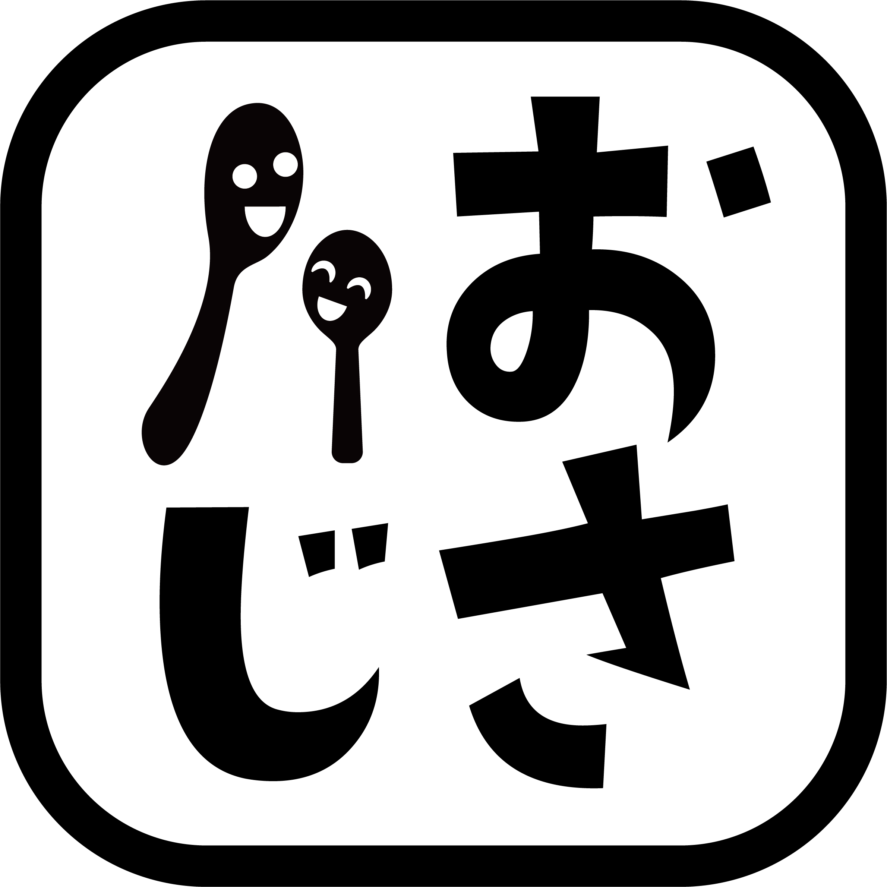

川で、遊ぶ
宿の前には清流が流れています。冷たい水に歓声があがります。
「子どもたちは川遊びを楽しみに。宿の前の川で気軽に遊べました」ご宿泊のお客様より

山間の村、築三百年の古民家を、一日一組で。
川で遊んで、火を囲んで、星を見上げて。
はじめまして、岡山県西粟倉村にある、おさじの宿・堂屋敷です。築三百年と言われる古民家を、一日一組で貸し切る宿です。派手なもてなしも、豪華な料理もありません。あるのは、川のせせらぎと、囲炉裏の火と、夜になると降ってくる星。
あるゲストは、ここを「日本の原風景のような場所」と呼びました。
EXPERIENCES
宿の前には清流が流れています。冷たい水に歓声があがります。
「子どもたちは川遊びを楽しみに。宿の前の川で気軽に遊べました」ご宿泊のお客様より
羽釜でごはんを炊いて、縁側でスイカ。山を眺めて、何もしない時間も、ごちそうです。
「羽釜のお米炊きを子どもにもさせてもらい、大人は大自然の中でお酒を」ご宿泊のお客様より
夜は囲炉裏に火を入れて。炭の灯りだけで、語らって。いつもより少し、素直になれる時間。
「囲炉裏で火を囲むと、いつになく母も饒舌だった」ご宿泊のお客様より
西粟倉は、中国山地の山間の村。「若杉天然林」まで足を伸ばせば、森の散策を楽しめます。
「施設から車で10分ほどのところに原生林があり、森林浴ができた」ご宿泊のお客様より
この夏、家族で。
星空とほたるの季節も、ぜひ。
▶公式予約ページで空室を見る各サイトからもご予約いただけます
素泊まりです。台所をご自由にお使いください。食材の買い出しはご相談に乗ります。
食材、お好みの飲みもの。虫が苦手な方は対策グッズがあると安心です。
はい。一棟貸し切りなので、気兼ねなくお過ごしいただけます。川あそびは大人の付き添いを。
駅から徒歩10分。買い出しのため、送迎をご相談ください。
はい、古民家ですので。とくにカメムシ（村では「カメちゃん」）。上手なお引き取りの作法もお伝えします。
夏の夜は涼しく、冬は暖房を用意しています。
ACCESS